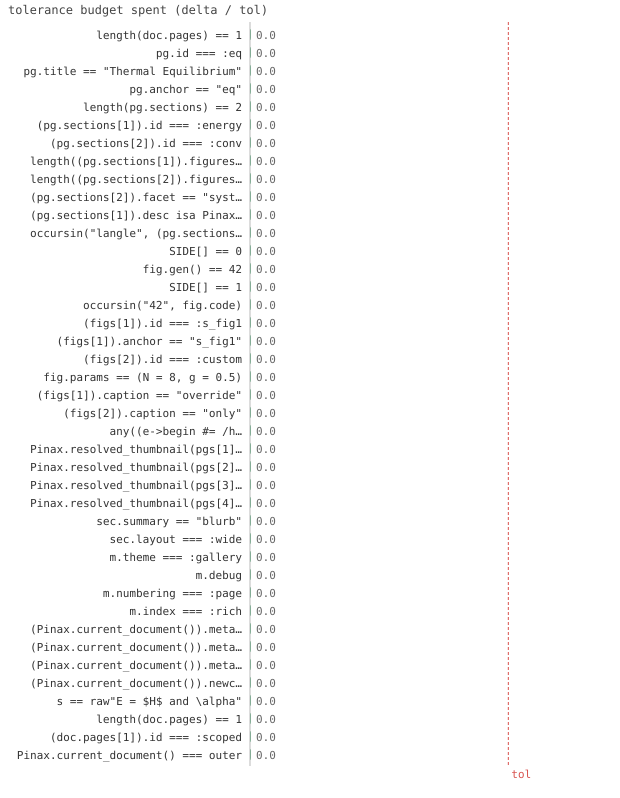

41/41 passed · 1.05s
| id | label | got | want | Δ vs tol (kind) | |
|---|---|---|---|---|---|
| ✓ | t273 | length(doc.pages) == 1 @ test_document.jl:21 code | 1.0 | 1.0 | 0.0 vs 0.5 (abs) |
| ✓ | t274 | pg.id === :eq @ test_document.jl:23 code | 1.0 | 1.0 | 0.0 vs 0.5 (abs) |
| ✓ | t275 | pg.title == "Thermal Equilibrium" @ test_document.jl:24 code | 1.0 | 1.0 | 0.0 vs 0.5 (abs) |
| ✓ | t276 | pg.anchor == "eq" @ test_document.jl:25 code | 1.0 | 1.0 | 0.0 vs 0.5 (abs) |
| ✓ | t277 | length(pg.sections) == 2 @ test_document.jl:26 code | 1.0 | 1.0 | 0.0 vs 0.5 (abs) |
| ✓ | t278 | (pg.sections[1]).id === :energy @ test_document.jl:27 code | 1.0 | 1.0 | 0.0 vs 0.5 (abs) |
| ✓ | t279 | (pg.sections[2]).id === :conv @ test_document.jl:28 code | 1.0 | 1.0 | 0.0 vs 0.5 (abs) |
| ✓ | t280 | length((pg.sections[1]).figures) == 2 @ test_document.jl:29 code | 1.0 | 1.0 | 0.0 vs 0.5 (abs) |
| ✓ | t281 | length((pg.sections[2]).figures) == 1 @ test_document.jl:30 code | 1.0 | 1.0 | 0.0 vs 0.5 (abs) |
| ✓ | t282 | (pg.sections[2]).facet == "system.g" @ test_document.jl:31 code | 1.0 | 1.0 | 0.0 vs 0.5 (abs) |
| ✓ | t283 | (pg.sections[1]).desc isa Pinax.Desc @ test_document.jl:32 code | 1.0 | 1.0 | 0.0 vs 0.5 (abs) |
| ✓ | t284 | occursin("langle", (pg.sections[1]).desc.source) @ test_document.jl:33 code | 1.0 | 1.0 | 0.0 vs 0.5 (abs) |
| ✓ | t285 | SIDE[] == 0 @ test_document.jl:48 code | 1.0 | 1.0 | 0.0 vs 0.5 (abs) |
| ✓ | t286 | fig.gen() == 42 @ test_document.jl:49 code | 1.0 | 1.0 | 0.0 vs 0.5 (abs) |
| ✓ | t287 | SIDE[] == 1 @ test_document.jl:50 code | 1.0 | 1.0 | 0.0 vs 0.5 (abs) |
| ✓ | t288 | occursin("42", fig.code) @ test_document.jl:51 code | 1.0 | 1.0 | 0.0 vs 0.5 (abs) |
| ✓ | t289 | (figs[1]).id === :s_fig1 @ test_document.jl:63 code | 1.0 | 1.0 | 0.0 vs 0.5 (abs) |
| ✓ | t290 | (figs[1]).anchor == "s_fig1" @ test_document.jl:64 code | 1.0 | 1.0 | 0.0 vs 0.5 (abs) |
| ✓ | t291 | (figs[2]).id === :custom @ test_document.jl:65 code | 1.0 | 1.0 | 0.0 vs 0.5 (abs) |
| ✓ | t292 | fig.params == (N = 8, g = 0.5) @ test_document.jl:76 code | 1.0 | 1.0 | 0.0 vs 0.5 (abs) |
| ✓ | t293 | (figs[1]).caption == "override" @ test_document.jl:89 code | 1.0 | 1.0 | 0.0 vs 0.5 (abs) |
| ✓ | t294 | (figs[2]).caption == "only" @ test_document.jl:90 code | 1.0 | 1.0 | 0.0 vs 0.5 (abs) |
| ✓ | t295 | any((e->begin #= /home/runner/work/Pinax.jl/Pinax.jl/test/test_document.jl:100 =# e… @ test_document.jl:100 code | 1.0 | 1.0 | 0.0 vs 0.5 (abs) |
| ✓ | t296 | Pinax.resolved_thumbnail(pgs[1]) == Pinax.FigRef(:picked) @ test_document.jl:130 code | 1.0 | 1.0 | 0.0 vs 0.5 (abs) |
| ✓ | t297 | Pinax.resolved_thumbnail(pgs[2]) == Pinax.FigRef((((pgs[2]).sections[1]).figures[2]).id) @ test_document.jl:131 code | 1.0 | 1.0 | 0.0 vs 0.5 (abs) |
| ✓ | t298 | Pinax.resolved_thumbnail(pgs[3]) == Pinax.FigRef((((pgs[3]).sections[1]).figures[1]).id) @ test_document.jl:133 code | 1.0 | 1.0 | 0.0 vs 0.5 (abs) |
| ✓ | t299 | Pinax.resolved_thumbnail(pgs[4]) === nothing @ test_document.jl:135 code | 1.0 | 1.0 | 0.0 vs 0.5 (abs) |
| ✓ | t300 | sec.summary == "blurb" @ test_document.jl:146 code | 1.0 | 1.0 | 0.0 vs 0.5 (abs) |
| ✓ | t301 | sec.layout === :wide @ test_document.jl:147 code | 1.0 | 1.0 | 0.0 vs 0.5 (abs) |
| ✓ | t302 | m.theme === :gallery @ test_document.jl:154 code | 1.0 | 1.0 | 0.0 vs 0.5 (abs) |
| ✓ | t303 | m.debug @ test_document.jl:155 code | 1.0 | 1.0 | 0.0 vs 0.5 (abs) |
| ✓ | t304 | m.numbering === :page @ test_document.jl:156 code | 1.0 | 1.0 | 0.0 vs 0.5 (abs) |
| ✓ | t305 | m.index === :rich @ test_document.jl:157 code | 1.0 | 1.0 | 0.0 vs 0.5 (abs) |
| ✓ | t306 | (Pinax.current_document()).meta.theme === :gallery @ test_document.jl:161 code | 1.0 | 1.0 | 0.0 vs 0.5 (abs) |
| ✓ | t307 | (Pinax.current_document()).meta.debug @ test_document.jl:165 code | 1.0 | 1.0 | 0.0 vs 0.5 (abs) |
| ✓ | t308 | (Pinax.current_document()).meta.bib_sources == ["a.bib", "b.bib"] @ test_document.jl:169 code | 1.0 | 1.0 | 0.0 vs 0.5 (abs) |
| ✓ | t309 | (Pinax.current_document()).newcommands[raw"\E"] == raw"\langle H\rangle" @ test_document.jl:173 code | 1.0 | 1.0 | 0.0 vs 0.5 (abs) |
| ✓ | t310 | s == raw"E = $H$ and \alpha" @ test_document.jl:178 code | 1.0 | 1.0 | 0.0 vs 0.5 (abs) |
| ✓ | t311 | length(doc.pages) == 1 @ test_document.jl:191 code | 1.0 | 1.0 | 0.0 vs 0.5 (abs) |
| ✓ | t312 | (doc.pages[1]).id === :scoped @ test_document.jl:192 code | 1.0 | 1.0 | 0.0 vs 0.5 (abs) |
| ✓ | t313 | Pinax.current_document() === outer @ test_document.jl:193 code | 1.0 | 1.0 | 0.0 vs 0.5 (abs) |

⤓ downloadPinax.reset!()
doc = Pinax.current_document()
@test length(doc.pages) == 1pg = doc.pages[1]
@test pg.id === :eq@test pg.title == "Thermal Equilibrium"@test pg.anchor == "eq"@test length(pg.sections) == 2@test pg.sections[1].id === :energy@test pg.sections[2].id === :conv@test length(pg.sections[1].figures) == 2@test length(pg.sections[2].figures) == 1@test pg.sections[2].facet == "system.g"@test pg.sections[1].desc isa Pinax.Desc@test occursin("langle", pg.sections[1].desc.source)SIDE[] = 0
Pinax.reset!()
fig = Pinax.current_document().pages[1].sections[1].figures[1]
@test SIDE[] == 0 # build did NOT evaluate the plot expr@test fig.gen() == 42 # materialize on demand@test SIDE[] == 1 # side effect ran exactly once@test occursin("42", fig.code) # source captured for change detectionPinax.reset!()
figs = Pinax.current_document().pages[1].sections[1].figures
@test figs[1].id === :s_fig1@test figs[1].anchor == "s_fig1"@test figs[2].id === :customPinax.reset!()
fig = Pinax.current_document().pages[1].sections[1].figures[1]
@test fig.params == (N=8, g=0.5)Pinax.reset!()
figs = Pinax.current_document().pages[1].sections[1].figures
@test figs[1].caption == "override"@test figs[2].caption == "only"@test any(e -> e.severity == Pinax.WARNING && occursin("caption", e.message), diag)Pinax.reset!()
pgs = Pinax.current_document().pages
@test Pinax.resolved_thumbnail(pgs[1]) == Pinax.FigRef(:picked) # explicit@test Pinax.resolved_thumbnail(pgs[2]) ==
Pinax.FigRef(pgs[2].sections[1].figures[2].id) # marker@test Pinax.resolved_thumbnail(pgs[3]) ==
Pinax.FigRef(pgs[3].sections[1].figures[1].id) # top@test Pinax.resolved_thumbnail(pgs[4]) === nothing # @no_thumbnailPinax.reset!()
sec = Pinax.current_document().pages[1].sections[1]
@test sec.summary == "blurb"@test sec.layout === :widePinax.reset!()
m = Pinax.current_document().meta
@test m.theme === :gallery@test m.debug@test m.numbering === :page@test m.index === :rich@test Pinax.current_document().meta.theme === :galleryPinax.reset!()
@debug_mode true
@test Pinax.current_document().meta.debugPinax.reset!()
@test Pinax.current_document().meta.bib_sources == ["a.bib", "b.bib"]Pinax.reset!()
@test Pinax.current_document().newcommands[raw"\E"] == raw"\langle H\rangle"s = md"E = $H$ and \alpha"
@test s == raw"E = $H$ and \alpha"Pinax.reset!()
outer = Pinax.current_document()
doc = Pinax.document() do
@page :scoped "S" begin
@section :s "S" begin
@figure 1
end
end
end
@test length(doc.pages) == 1@test doc.pages[1].id === :scoped@test Pinax.current_document() === outer # global state restored{kind=link}